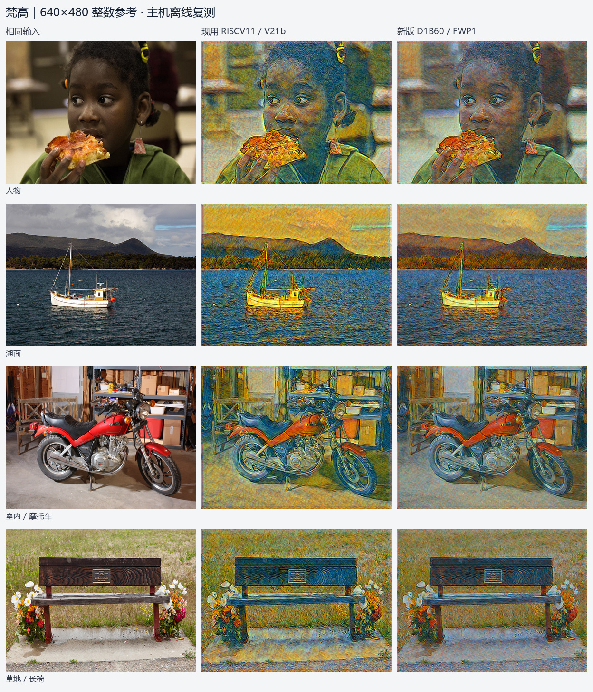
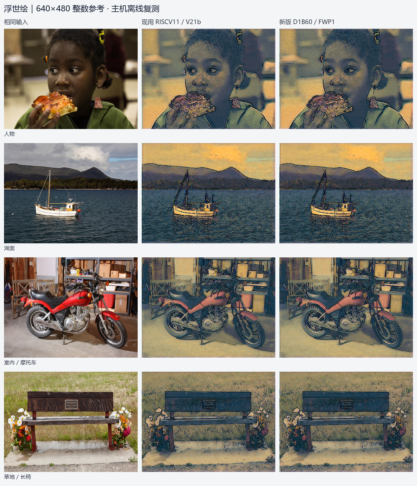
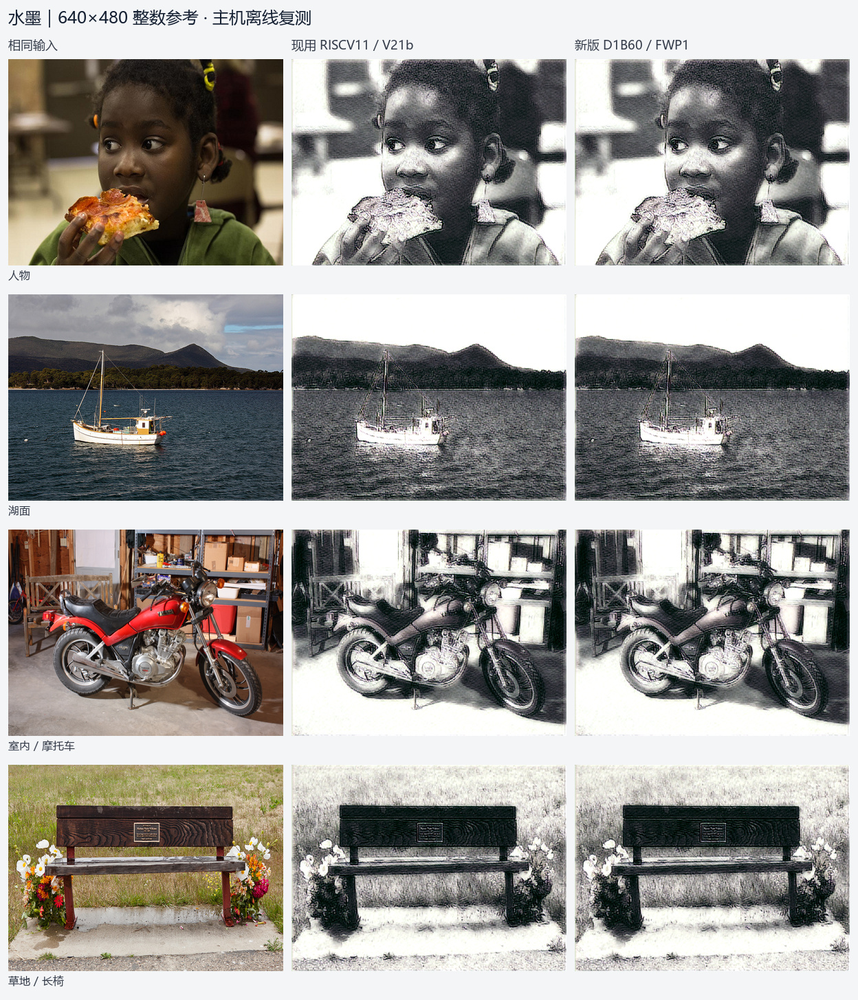
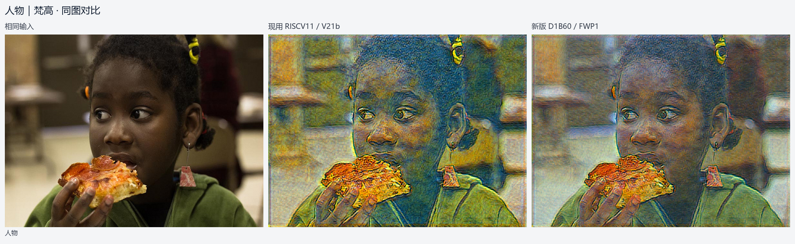

固定提交 7d95dbe · 2026-10-23 本地复测 · 4 场景 × 3 风格 × 新旧版本，共 24 次 640×480 整数推理。
每组从左到右：相同输入、现用 RISCV11、新版 D1B60/FWP1。没有输出后处理。采用本帧 IN 统计，近似静止场景；不是 FPGA 摄像头实测。
已核对：54 个下载文件的 Git 哈希、完整选定候选文件清单、正式版本基线、候选 qparams 与部署 IN ROM、blob 和固件 ROM。只改梵高 IN 仿射参数，浮世绘/水墨 8 个复测案例逐像素一致。

| 场景 | 新旧平均绝对像素差 | 新旧逐像素一致 |
|---|---|---|
| person_face | 17.1772 LSB | False |
| water_day | 18.4148 LSB | False |
| architecture | 17.7434 LSB | False |
| plants_garden | 16.3117 LSB | False |
像素差只描述新旧变化，不是画质评分。

| 场景 | 新旧平均绝对像素差 | 新旧逐像素一致 |
|---|---|---|
| person_face | 0.0000 LSB | True |
| water_day | 0.0000 LSB | True |
| architecture | 0.0000 LSB | True |
| plants_garden | 0.0000 LSB | True |
像素差只描述新旧变化，不是画质评分。

| 场景 | 新旧平均绝对像素差 | 新旧逐像素一致 |
|---|---|---|
| person_face | 0.0000 LSB | True |
| water_day | 0.0000 LSB | True |
| architecture | 0.0000 LSB | True |
| plants_garden | 0.0000 LSB | True |
像素差只描述新旧变化，不是画质评分。

新版板上帧率、动态画质、切换延迟、启动和稳定性本轮未测。不能把旧版约 30fps 当成新版实测值。